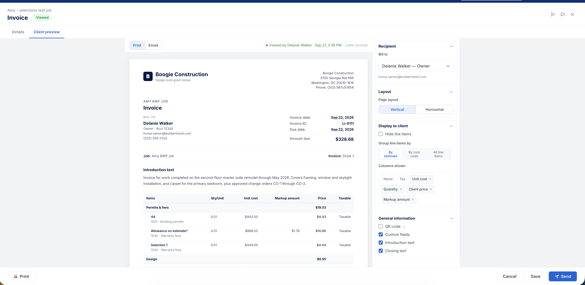

Invoice Presentation
Builders keep telling us the invoice Buildertrend generates isn't good enough to send, so they rebuild it somewhere else every month. This page is a draft: the case for fixing it in Q4, built from research already on file. I'm starting it now, before the evidence scatters across tickets and calls, and will build it out as the work actually ships.
Why this matters
This isn't a new complaint. It's the same one that surfaces throughout Path to Invoicing: Priya Gosar and Andrew Maccormack both said the invoice doesn't look like the estimate the client already signed. What's new is that Kendall pulled the thread further and found builders who are embarrassed enough by the current invoice to actively avoid sending it, even ones who are otherwise happy, engaged users of Buildertrend.
"The way that the invoice itself looks, looks like crap… we didn't feel like it was a good representation of us as a builder to turn around and hand that over to our client." — AJ Epding, Hancock Construction, left BT invoicing 18 months ago
"In an open book, you have to show your clients where you spent their money. And it's just… it's embarrassing." — Michelle Smith, Hanson Land & Sea
Builders don't always stop invoicing over this. More often they keep using Buildertrend internally and quietly route around it: create the invoice here, then rebuild the client-facing document somewhere else, every single billing cycle.
What builders are actually doing instead
Five builders, each handling it differently, each paying the same tax in manual rework:
| Builder | Status | What they do instead |
|---|---|---|
| Andrew Maccormack | Invoicing, flagged at risk | Rebuilds every invoice in Excel so it matches the estimate his client approved |
| Debbie Penick | Invoicing monthly | Pulls the bills into Excel, does the math by hand, retypes the result into the invoice |
| Demetri Milles | Left invoicing | Writes proposals in Buildertrend, retypes them into QuickBooks line by line |
| Michelle Smith | Invoicing | Sends a QuickBooks PDF instead of Buildertrend's |
| Liz, Pure Construction Group | Invoicing | Attaches the owner's Word document to every Buildertrend invoice she creates |
From Kendall Sutton's Q4 Invoice presentation opportunity writeup.
Debbie's version of the workaround shows why simply combining line items hasn't solved it:
"If we were to pull all of our material bills, our trade bills, all of that stuff in, it becomes a 50 page document to the client. We can't have that. So we basically pull the bills out into Excel, we do our own math, and then we plug it in manually." — Debbie Penick
Demetri's version is the clearest statement of the actual ask, and it's one we'd already heard independently from Priya Gosar and Andrew:
"I wanted to show the one price for the whole group. I don't want to show the builder cost; I just wanted to show the client price, along with the description and the title for the group." — Demetri Milles, Red Isle
Demetri stopped invoicing in Buildertrend specifically over this. He called the group-level view "a huge improvement" when it was described to him and has already agreed to pilot it.
The detail question cuts both ways
The complaint isn't simply "not enough detail" or "too much detail." Builders want opposite things depending on how they bill:
"I would like to be able to list all the bills under each cost code." — Michelle Smith, Hanson Land & Sea
"Open book invoices where we want to show one line for all materials and one line for labor." — Karalis Construction
Other independent asks from three or more builders across calls, in-app feedback, and NPS: show the vendor name and bill number behind every line, or collapse markup to one line at the bottom instead of spreading it across every item. There's no single right layout here. The requirement is builder-controlled disclosure, not a better default.
Two more accounts saying the same thing, independently
Kendall's interviews aren't the only place this shows up. Gainsight activity notes from September 2026 carry two more named cases, one on each contract type:
"Customer is experiencing confusion around invoice totals, cost code separation, markup calculations, and how labor versus material costs are displayed to both internal users and clients." — Onboarding notes, Fuschetto Development (fixed price, active, named invoicing as their last adoption blocker)
"They value the professional format of progress bills favored by their high-end residential clients but find the current system confusing, particularly how older invoices are linked to new progress bills and the lack of clear visibility on which costs are included." — QBR notes, Krikorian Construction (open book, active, repeat feedback not yet addressed)
1,351 builder accounts raised some version of this in Gainsight activity notes. One churned account, Big Sky Finishes, named it as the deciding factor outright in their exit survey: "we don't like how our QB invoices and estimates look when they are pulled into Buildertrend… we were wanting to see our QB estimates and invoices exactly how they are in QB."
Independent confirmation: it's control, not looks
A separate classification of 21,639 verbatims across NPS, EnjoyHQ, in-app feedback, and support calls split "presentation" complaints into two components in every source: not being able to control what's shown (fields, grouping, what the client sees) versus the invoice simply looking unprofessional. The ratio holds everywhere: 7 to 10 times more complaints about control than about appearance, and appearance never clears 2.7% in any source. Restyling the invoice would move almost none of this complaint. Giving builders control over what's on it would move most of it, which is exactly what the four Q4 solutions below are built to do.
The number that makes this worth fixing now
Separately from Kendall's interviews, we already knew how this shows up in the data: only 39.7% of released invoices are ever opened by the client. Fifty builders with three or more released invoices have never had a single one opened. Released is not the same as received, and a document a builder is embarrassed to send is one reason a client never opens it.
What's on the table for Q4
Some formatting control already exists: line-item detail on or off, show and hide columns, combine standard invoice lines by cost code, and header/subtotal grouping on progress invoices. Four gaps remain:
- Let a standard invoice group by the estimate's structure. The ask from Andrew, Debbie, and Demetri. Progress invoices already do this; standard invoices don't.
- Let open-book builders group by cost source. Asked for by Michelle and Karalis Construction, the open-book mirror of the same underlying need.
- Add an option to show fee in the invoice subtotal. Already standard in comparable products, and a recurring ask from open-book builders specifically.
- Keep descriptions when lines are combined. Combining is the closest thing we have today to what builders want, and it fails on exactly this point. Debbie tested it live on a call: "we can't put notes in it… we like to be specific with our clients about what it is they're paying for."
Comparable products already treat this as table stakes. JobTread, Procore, QuickBooks, and Buildxact all let a builder control how a client-facing invoice looks, and so does CoConstruct, which means builders migrating in from CoConstruct are losing formatting control they already had.
Current state
Nothing from this recommendation has been built yet, so there's no prototype for the Q4 solutions. What's linked below is today's shipped client invoice preview, the surface any grouping or fee-subtotal work would extend. "Customize display" is the closest existing control to what builders are asking for, and it stops well short of it.

Today's "Display to client" panel: grouping and column toggles exist, but nothing here lets a builder show a fee subtotal or keep descriptions when lines are combined.
Open prototype in new tab: bt-invoice.vercel.app/?page=client-preview-invoice ↗
What this is, and isn't, claiming
This is scoped as a retention play, not an acquisition one. The builders it targets already invoice in Buildertrend, or recently stopped specifically over this. Kendall's own framing, which I want to keep intact rather than round up:
"For most builders who stopped invoicing, this isn't the main reason, but it's one of the reasons." — Kendall Sutton
AJ Epding put accounting sync first, ahead of presentation. Cathie Merry's blocker is her owner, who won't log into software at all. Noah Garza rejected the presentation framing outright when it was raised with him. Demetri is the clean exception, not the typical case. The honest claim is: this retains builders already invoicing and stops the parallel-document habit for people like Debbie and Liz. It is not expected to convert a meaningful number of lapsed or never-invoiced builders on its own, that's the job of the unclear-path and too-many-steps work already underway this quarter.
A separate 21,639-verbatim analysis puts a real number behind Kendall's caveat instead of leaving it as a hunch. Comparing builders who left Buildertrend against builders who stayed, invoice customization complaints, the presentation-adjacent theme, run 11.2 points lower among people on their way out than among people who stayed. Every day-to-day friction theme shows the same pattern. The only themes that run higher among leavers are structural: accounting sync (+18.7 points), contract-model fit, and already invoicing somewhere else. That's the quantified version of "this is a satisfaction fix, not a retention one," and it's exactly why this work is scoped the way it is: worth doing for the builders still here, not the lever that stops someone from leaving.
Two real dependencies to watch before this gets built: the accounting side is tied to an in-flight invoice migration to a new accounting service, and any change to invoice creation carries real risk without an agreed end state to build toward. Both are called out directly in the recommendation doc rather than glossed over.